Andrew의 아일랜드 동행
아일랜드 성지순례
미사 시간에 맞춰 도착하고, 기도할 시간을 넉넉히 둡니다.
더블린 도보 순례 · 레지오 마리애 (Legion of Mary) · 녹 성모성지 (Knock Shrine) · 서부 성지순례 · 피정 · 맞춤형 코스 구상
성지순례
성 패트릭의 땅에서, 한국어로 걷는 순례
아일랜드는 성 패트릭 (St Patrick)이 복음을 전한 땅입니다. 녹 (Knock) 성모성지, 글렌달록 (Glendalough) 수도원터, 클론막노이즈 (Clonmacnoise)가 그대로 남아 있고, 더블린 시내에는 성인들의 유해를 모신 곳을 비롯해 성당 열두 곳이 걸어서 닿는 거리에 모여 있습니다.
안내자 서현 Andrew는 대전교구 아일랜드 성지순례단을 9일 일정으로 가이드했습니다. 레지오 마리애 본부 (Concilium)에서는 한국어 통역 봉사를 하고 있습니다. 방문할 성지의 미사 시간을 미리 확인해 도착 시각을 맞춥니다. 원하시면 이동 중 한국어 묵상과 성가도 함께 준비합니다. 본당·교구 단체, 레지오 꾸리아 (Curia), 가족 단위 모두 받습니다.
- 성지순례 안내자
- 김서현 대건안드레아
- 순례 가이드
- 대전교구 아일랜드 성지순례단 (9일 일정)
- 통역 봉사
- 레지오 마리애 본부 (Concilium) 한국어 통역
- 국제 봉사
- 세계청년대회 (WYD) · 2025 청년 희년
- 공동체
- 아일랜드천주교한인공동체 청년회장
- 운전·안내
- 유럽 운전 6년 이상 · 직접 운전·안내
순례 프로그램 6가지
반나절 도보 순례부터 9일 전국 순례까지. 카드를 누르면 정차지와 안내가 나옵니다.
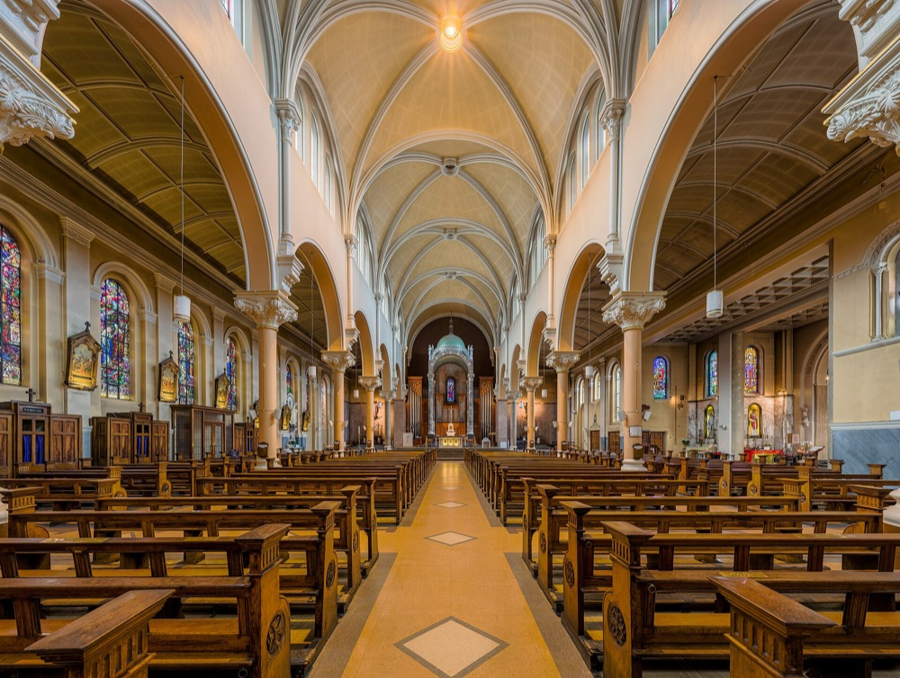
반나절~하루 · 도보
더블린 시티 도보 성지순례Dublin City Walking Pilgrimage
성인들의 유해를 모신 곳을 비롯해 성당 열두 곳을 걸어서 돕니다. 반나절이면 한 구간, 하루면 두 구간.
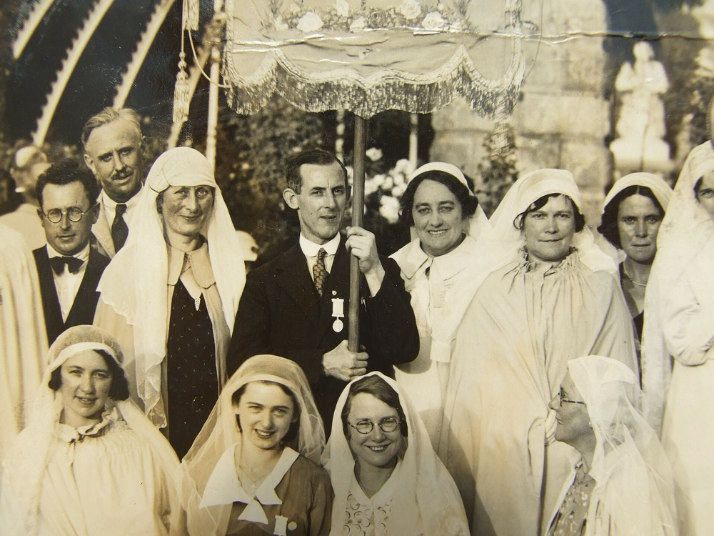
반나절 · 더블린
레지오 마리애 성지순례Legion of Mary
세계 본부 콘칠리움, 창설자 프랭크 더프의 생가와 묘소, 첫 주회 장소를 잇는 코스입니다.
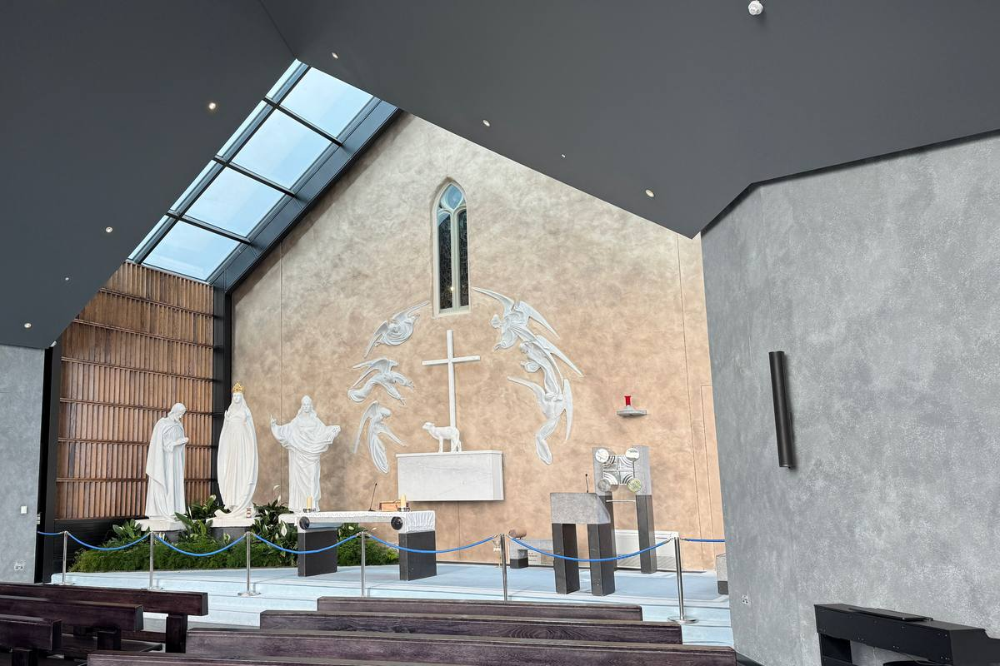
하루 · 메이요
녹 성모성지 순례Knock Shrine
1879년 성모님이 발현하신 곳. 다른 데 들르지 않고 녹에만 오래 머무는 일정으로 짤 수 있습니다.
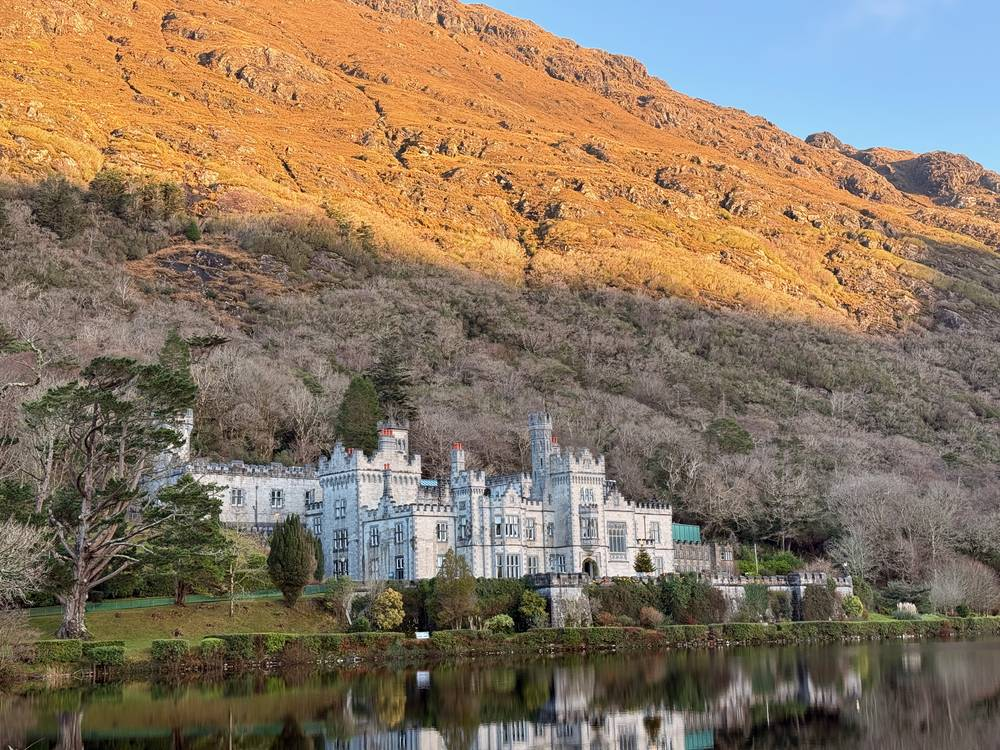
당일 코스 · 운영 중
아일랜드 서부 성지순례Kylemore Abbey · Knock Shrine
이미 로드트립으로 운영 중인 당일 코스. 하루에 녹 성모성지와 서부 수도원·대성당을 함께 돕니다.
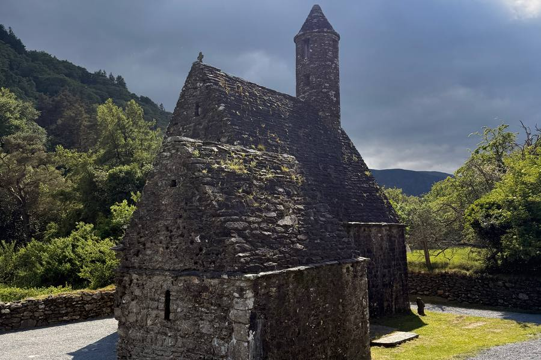
1박 이상 · 기간 자유
아일랜드 피정 프로그램Retreat
한 곳에 머무는 순례입니다. 수도원 게스트하우스나 성지 숙소에 묵으며 일정을 비워 둡니다.
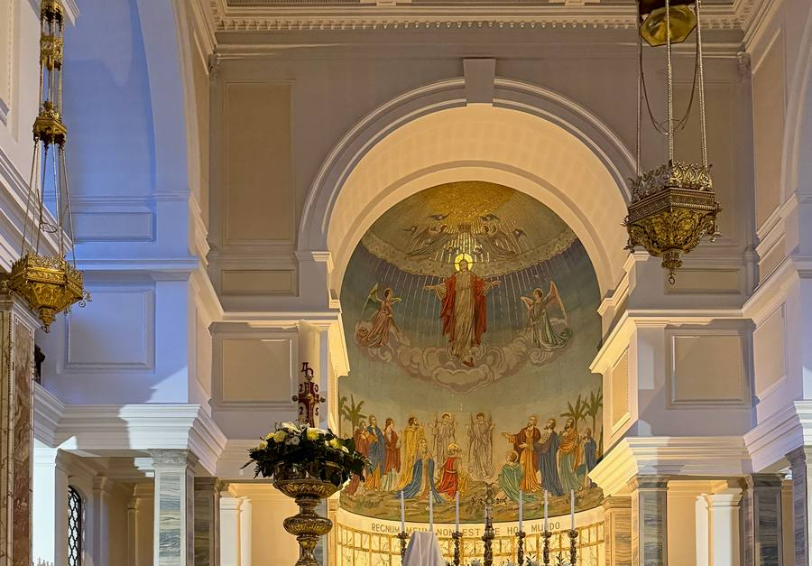
3일~9일 · 기간 자유
맞춤형 성지순례 코스 구상Custom Pilgrimage Itinerary
기간·인원·체력·희망 성지에 맞춰 일정표를 처음부터 함께 만듭니다. 대전교구 순례단은 9일 일정이었습니다.
여기 없는 성지도 됩니다. 카톡으로 물어보세요.
카톡으로 1:1 순례 상담더블린 시내에는 성인들의 유해를 모신 성당이 걸어서 닿는 거리에 모여 있습니다. 리피강 (River Liffey)을 기준으로 북쪽과 남쪽 두 구간으로 나눠 돕니다.
북쪽 구간 (Northside)- 1레지오 마리애 본부 (Concilium Legionis Mariae · De Montfort House, Morning Star Ave) 레지오 마리애가 시작된 곳1921년 프랭크 더프가 창설한 레지오 마리애의 세계 본부. 사진은 1934년 단원들과 창설자.
- 2
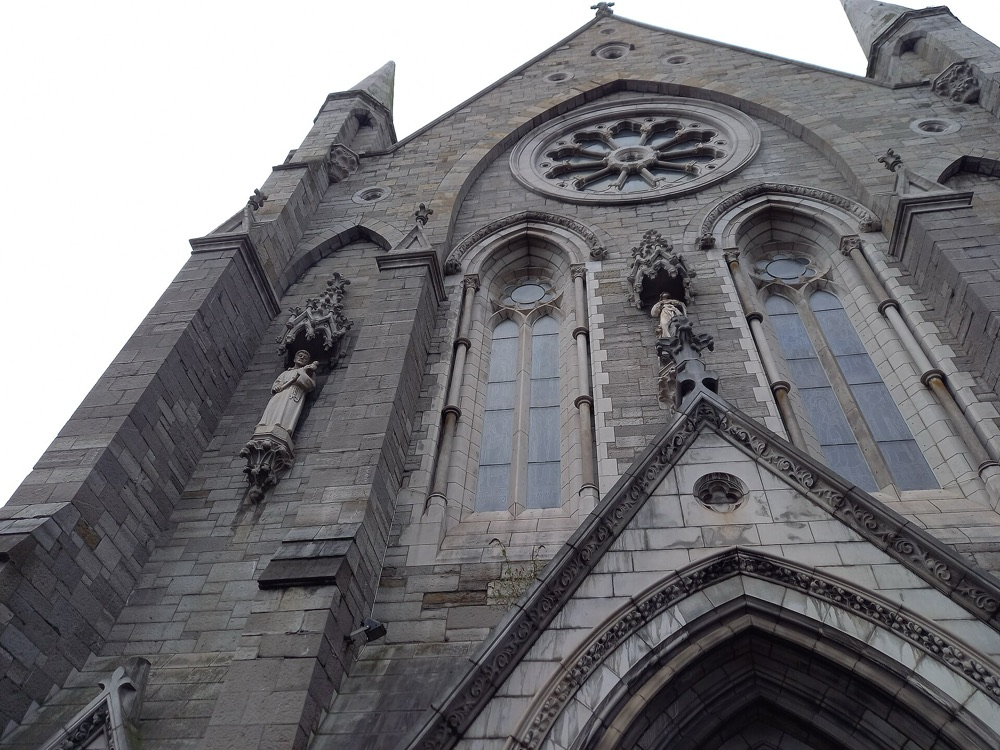
카푸친 작은 천사들의 성모 성당 (St Mary of the Angels, Church St · Capuchin Friary) 오상의 성 비오 신부 유해카푸친 수도회 성당. 1868년 봉헌. - 3
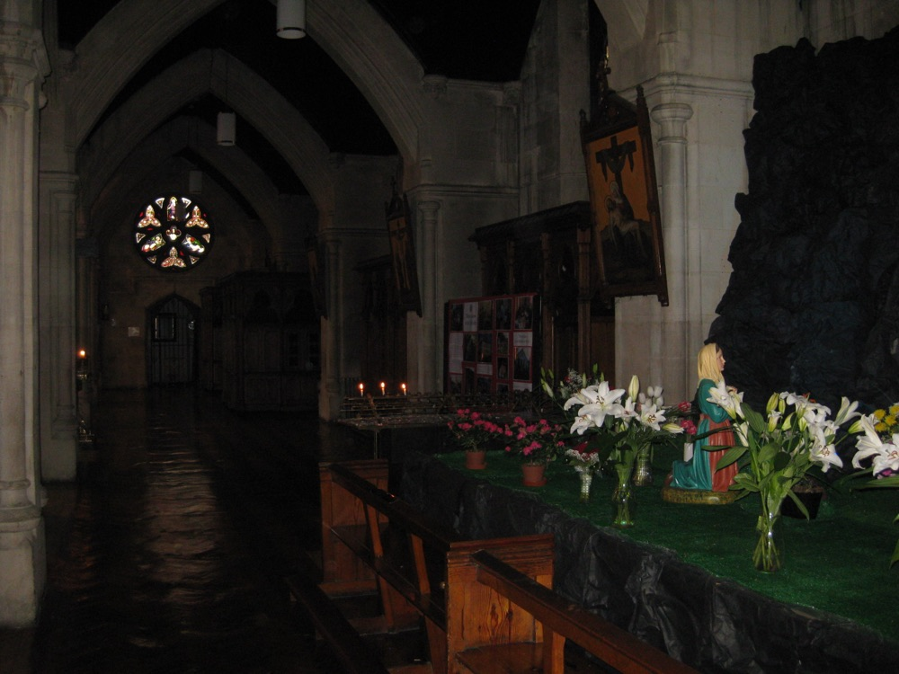
도미니코회 구세주 성당 (St Saviour's, Dominick St · Dominican Order, O.P.)1861년 지은 고딕 부흥 양식의 도미니코회 성당. - 4
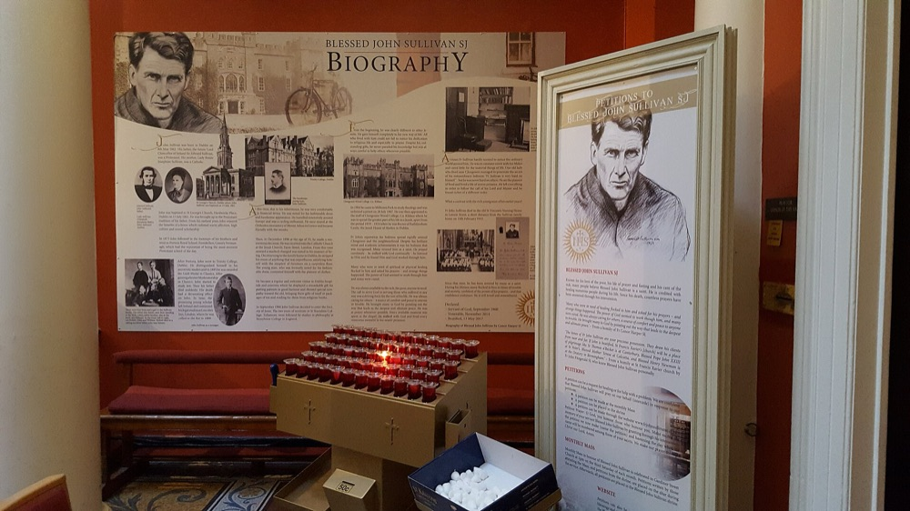
성 프란치스코 하비에르 성당 (St Francis Xavier Church, Gardiner St · 예수회 S.J.) 복자 존 설리번 신부 유해1832년 봉헌된 예수회 성당. 유해 안치소가 성당 안에 있습니다. - 5
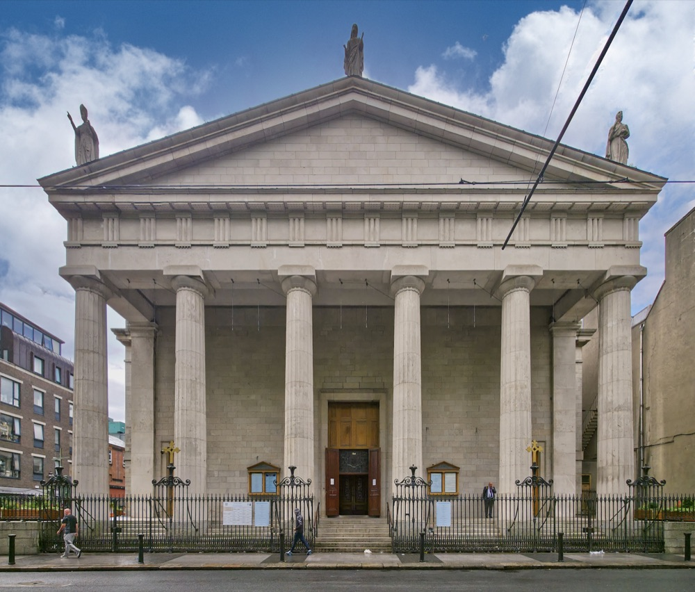
더블린 성모 마리아 주교좌성당 (St Mary's Pro-Cathedral, Marlborough St)더블린 대교구 주교좌. 1825년 봉헌, 그리스 부흥 양식. - 6
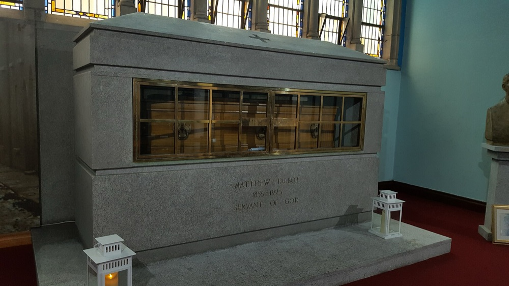
루르드의 성모 성당 (Our Lady of Lourdes Church, Sean McDermott St) 가경자 매트 탈보트 유해1972년 글라스네빈에서 옮겨 온 매트 탈보트의 묘가 성당 안에 있습니다.
- 7
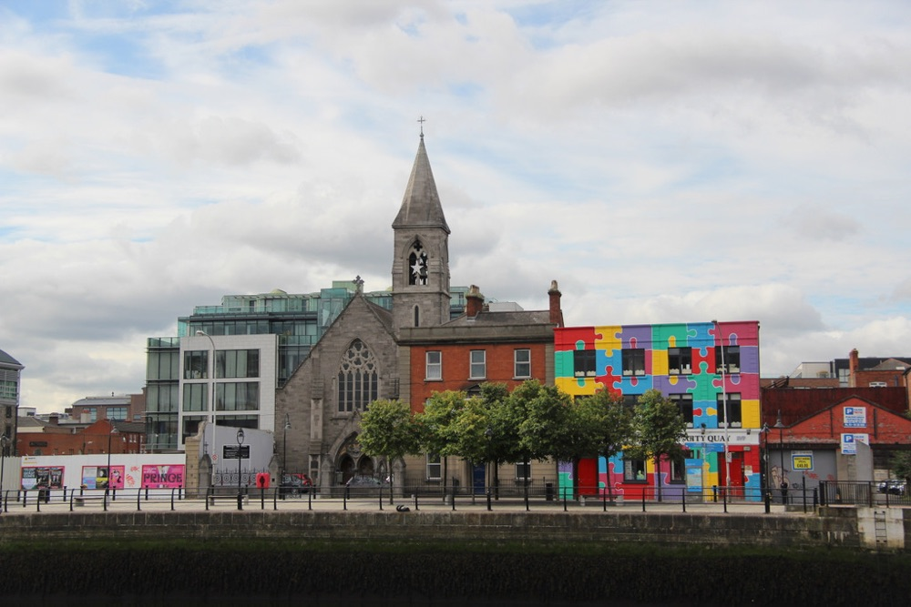
시티 키 티 없으신 성모 성심 성당 (Immaculate Heart of Mary, City Quay)리피강 남쪽 부두에 선 1863년 성당. - 8
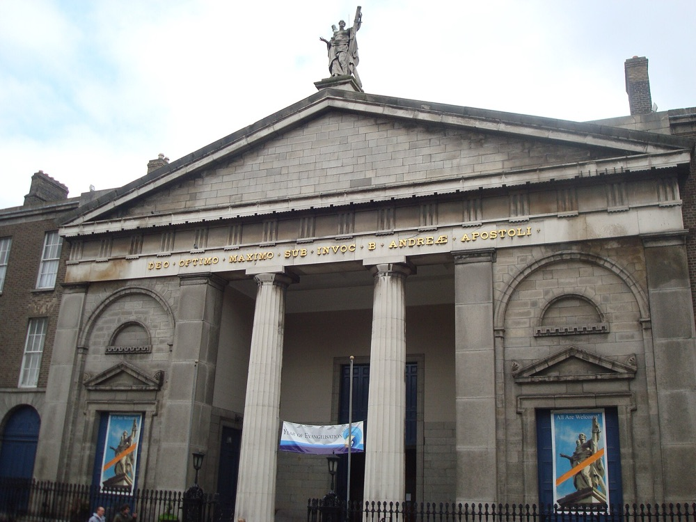
웨스트랜드 로 성 안드레아 성당 (St Andrew's Church, Westland Row)1834년 봉헌. 피어스 역 옆에 있어 도보 순례의 남쪽 출발점으로 삼기 좋습니다. - 9
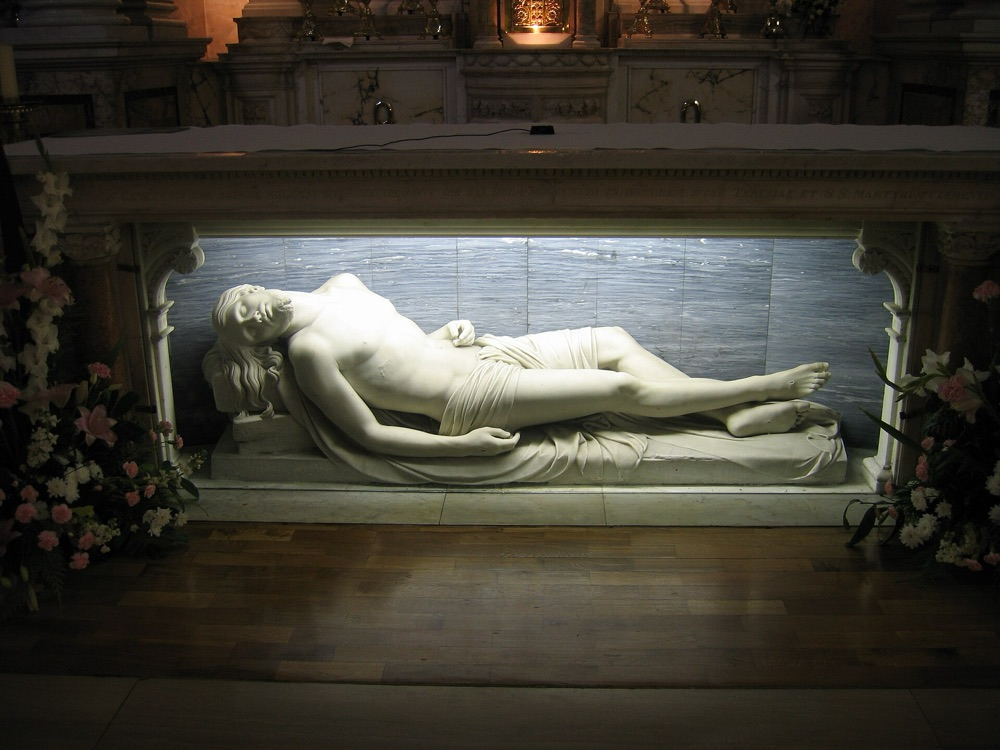
클라렌던 스트리트 성 데레사 성당 (St Teresa's, Clarendon St · 맨발 가르멜회 O.C.D.)그래프턴 거리 옆 가르멜회 성당. 제대 아래 존 호건의 조각 「죽은 그리스도」가 있습니다. - 10화이트프라이어 스트리트 가르멜 성당 (Whitefriar Street Carmelite Church, Aungier St · 아일랜드 가르멜회 본부) 성 발렌티노 유해 · 더블린의 성모상1825년 세운 가르멜회 성당. 성 발렌티노 유해와 16세기 더블린의 성모상을 모십니다.
- 11
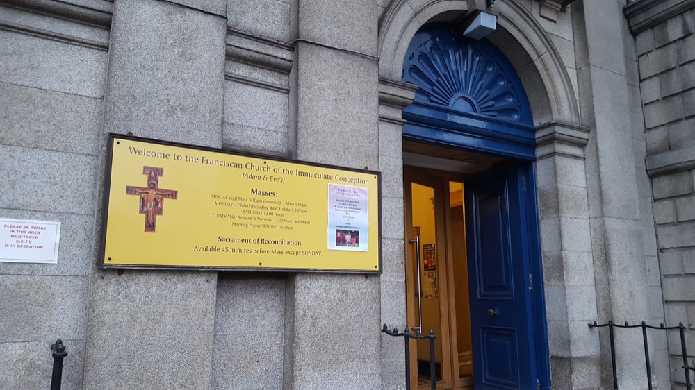
프란치스코회 성당 (Church of the Immaculate Conception, “Adam and Eve’s”, Merchants Quay · O.F.M.)리피강변 프란치스코회 성당. 형벌법 시대 뒷골목 선술집 이름에서 별칭이 왔습니다. - 12
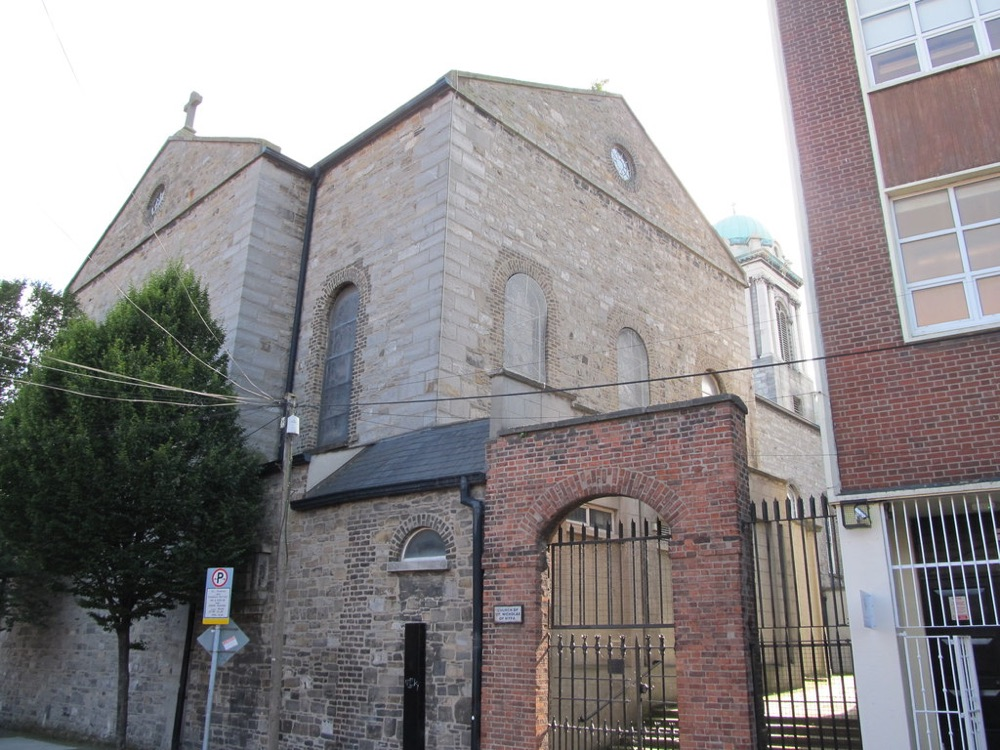
성 니콜라오 성당 (St Nicholas of Myra, Francis St) 마이라 하우스 · 레지오 마리애 첫 주회 장소1829년 성당. 옆 건물 마이라 하우스에서 1921년 레지오 마리애 첫 주회가 열렸습니다.
- 13
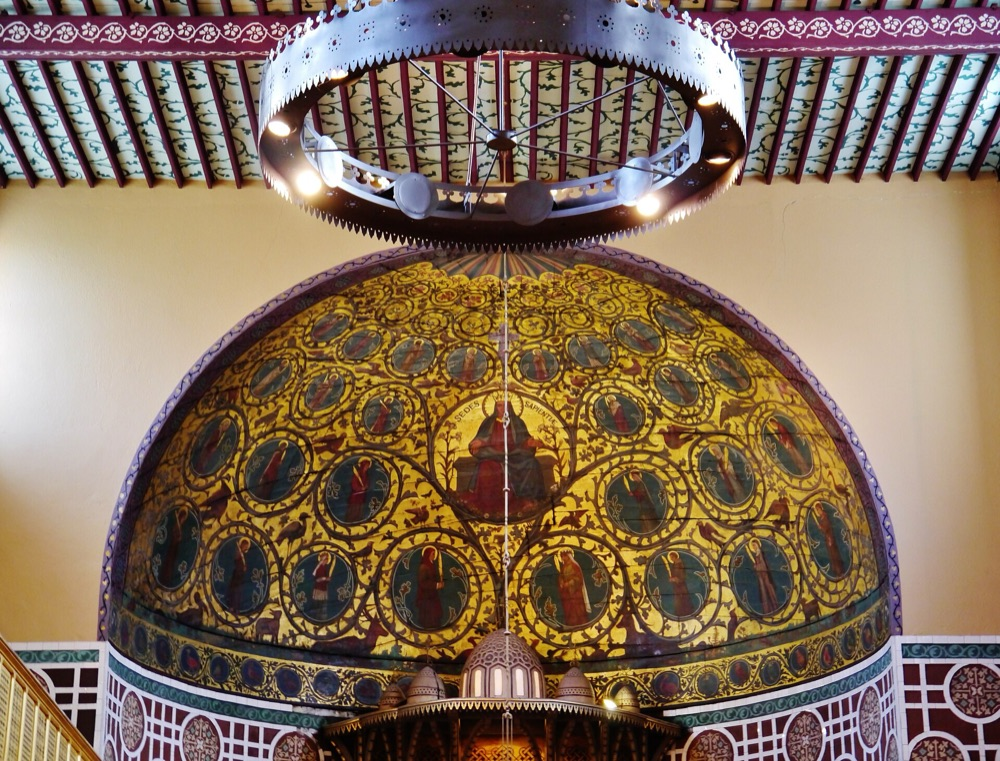
뉴먼 대학 성당 (Newman University Church, St Stephen's Green)성 존 헨리 뉴먼이 1856년 세운 비잔틴 양식 성당. - 14
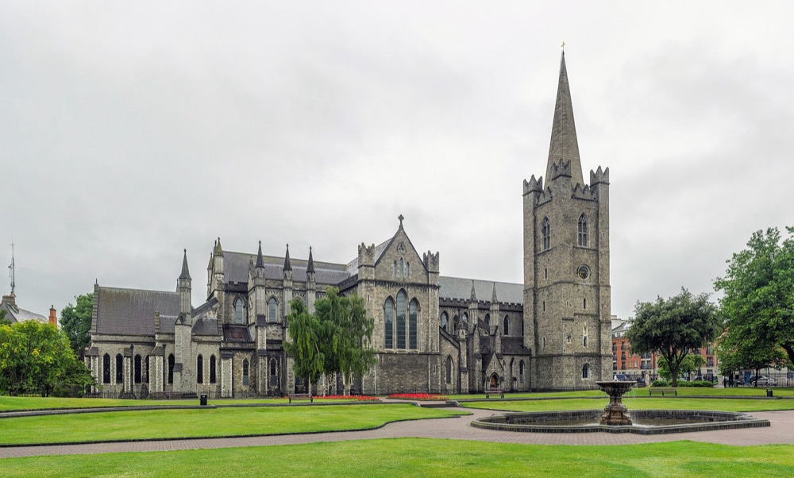
성 패트릭 대성당 (St Patrick's Cathedral)아일랜드에서 가장 큰 성당. 성공회 소속, 입장료 별도. - 15
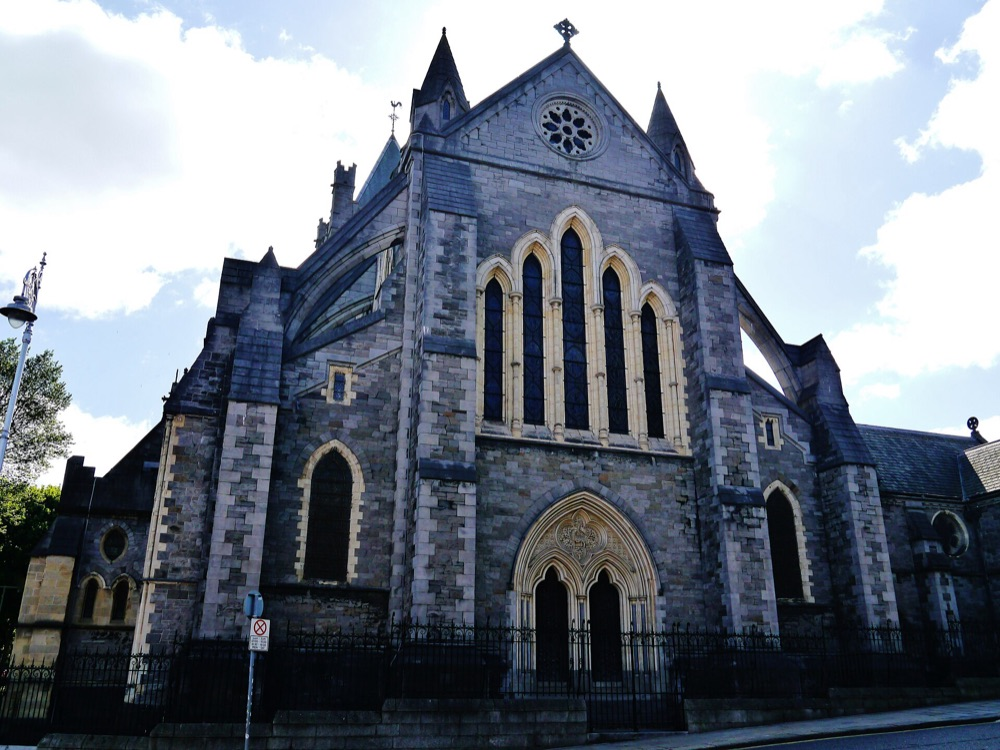
크라이스트 처치 대성당 (Christ Church Cathedral · 성 라우렌시오 오툴 유물)11세기에 세운 더블린 최고(最古) 성당. 성공회 소속, 입장료 별도.
성당마다 개방 시간이 다르고, 유해를 가까이서 볼 수 없는 날도 있습니다. 날짜를 주시면 미사 시간까지 확인해서 동선을 짭니다. 꼭 가고 싶은 성당이 있으면 알려 주세요.
레지오 마리애가 태어난 도시가 더블린입니다. 창설 현장을 순서대로 도는 코스를 한국어로 안내합니다.
- 1콘칠리움 (Concilium Legionis Mariae · 레지오 마리애 세계 본부, De Montfort House)전 세계 레지오 마리애를 관할하는 본부. 사진은 1934년 단원들과 창설자 프랭크 더프.
- 2
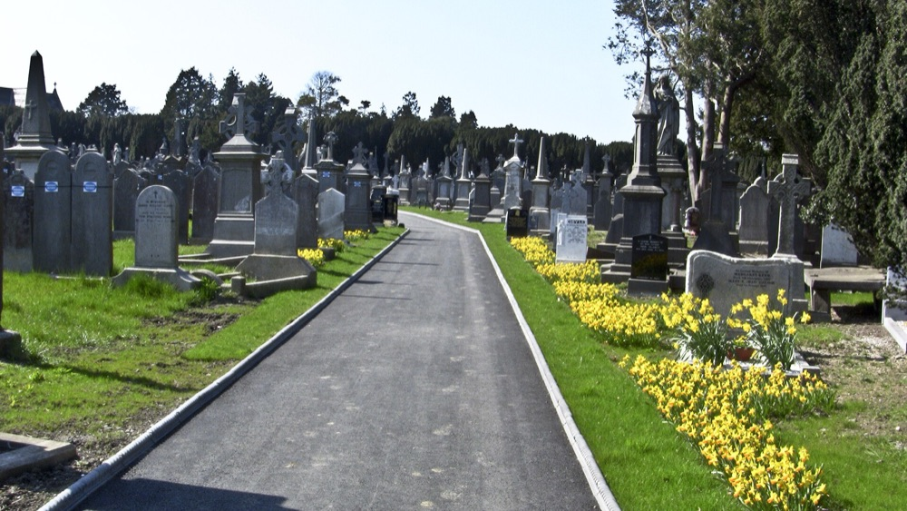
창설자 프랭크 더프 생가와 묘소 (Frank Duff · 글라스네빈 묘지 Glasnevin Cemetery)피브즈버러의 생가 앞을 지나 글라스네빈 묘지의 묘소에서 기도합니다. - 3첫 주회 장소 마이라 하우스 (Myra House, Francis St · 성 니콜라오 성당 옆)1921년 9월 7일 첫 주회가 열린 곳. 옆 성 니콜라오 성당과 함께 둘러봅니다.
콘칠리움 내부 참관은 요일과 시간에 따라 달라집니다. 날짜를 주시면 미리 확인해 알려 드립니다.
1879년 성모님이 발현하신 메이요주 (Co. Mayo) 녹 (Knock). 아일랜드에서 순례자가 가장 많이 찾는 성모성지입니다. 서부 코스를 함께 돌지 않고 녹에만 오래 머무는 일정으로 짤 수 있습니다.
- 1
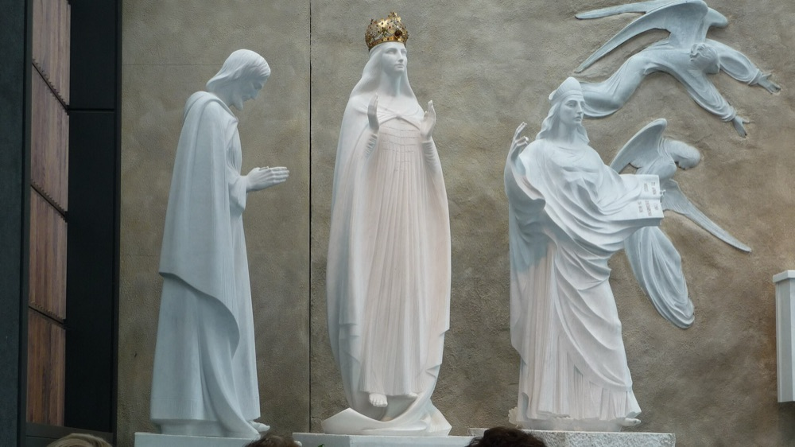
발현 성당 (Apparition Chapel · 발현 벽면 Apparition Gable)1879년 8월 21일 성모님과 성 요셉, 성 요한이 나타난 옛 성당 벽면. 지금은 유리로 감싼 경당입니다. - 2
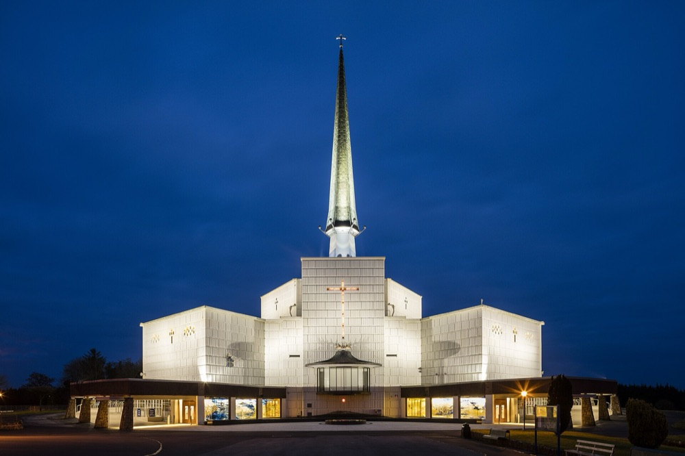
녹 대성당 (Basilica of Our Lady, Queen of Ireland)1976년 봉헌된 대성당. 1만 명이 들어가며, 주일과 축일 미사가 여기서 열립니다. - 3
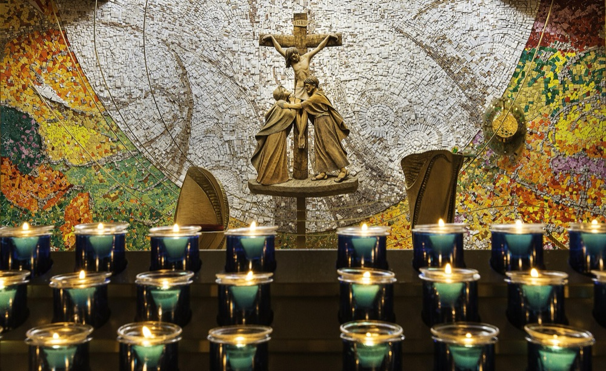
성체조배실 · 고백소 (Blessed Sacrament Chapel · Chapel of Reconciliation)고백소는 하루 종일 사제가 상주해 여러 언어로 고해를 받습니다. 성수대는 발현 성당 옆에 있습니다. - 4
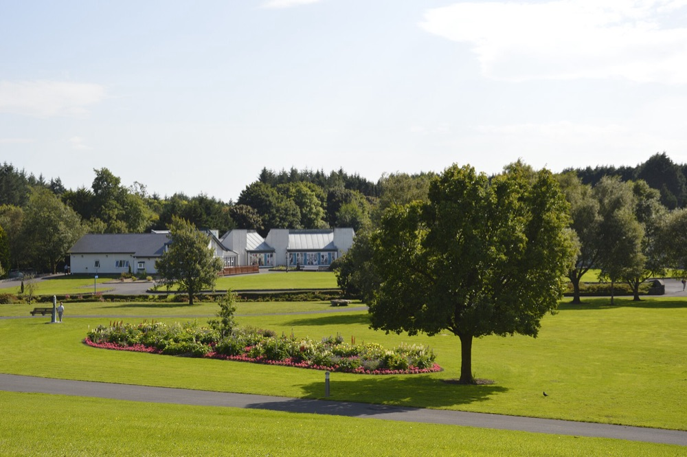
성지 박물관 · 십자가의 길 (Knock Museum · Stations of the Cross)발현 증인 15명의 기록과 당시 마을을 보여 주는 박물관. 십자가의 길은 성지 뒤편 산책로에 있습니다.
녹은 미사 시간에 맞춰 가는 게 좋습니다. 날짜를 주시면 그날 성지 미사 시간을 확인해 도착 시각을 맞춥니다.
로드트립 코스로 이미 운영 중인 당일 성지순례입니다. 하루에 녹 성모성지와 서부의 수도원·대성당을 함께 돕니다.
- 1녹 성모성지 (Knock Shrine)1879년 성모 발현지. 발현 성당과 대성당을 둘러보고 미사에 참례합니다.
- 2
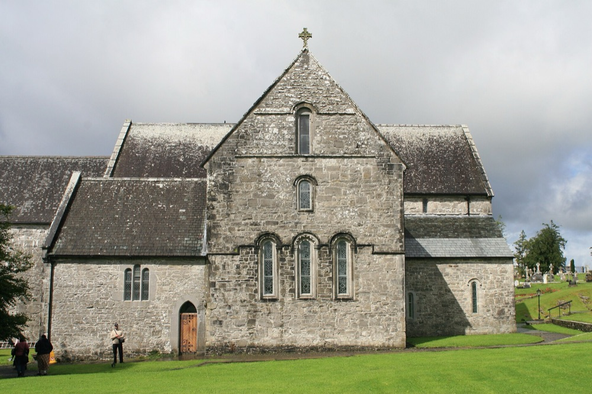
발린터버 수도원 (Ballintubber Abbey) 800년간 미사가 끊긴 적 없는 13세기 수도원1216년 세운 뒤 형벌법 시대에도 미사가 끊긴 적 없는 수도원. - 3카일모어 수도원 (Kylemore Abbey · O.S.B.)호숫가의 베네딕도회 수녀원. 고딕 성당과 빅토리아식 정원, 입장료 별도.
- 4
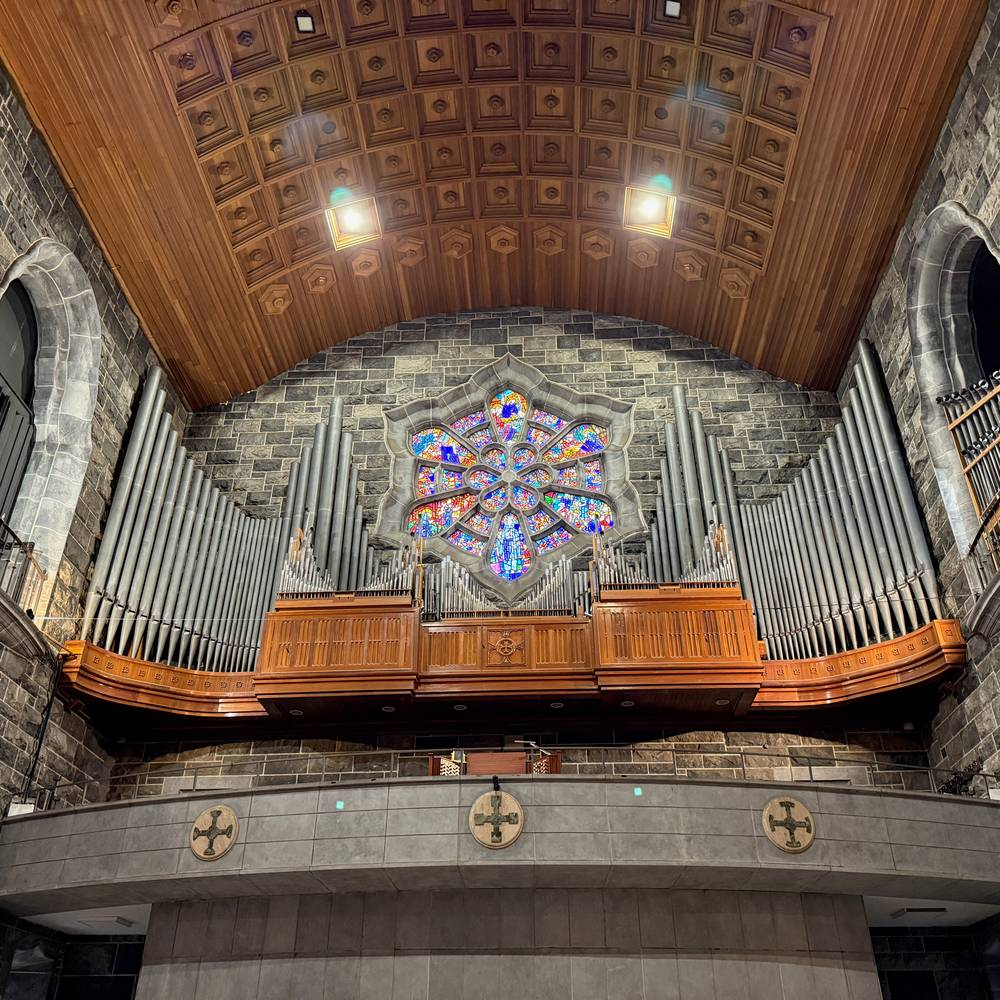
골웨이 대성당 (Galway Cathedral)1965년 봉헌된 유럽 마지막 대형 석조 대성당. 골웨이 시내에서 하루를 마칩니다.
이 코스만 정가가 있습니다. 정차지 사진과 인원별 가격은 로드트립 페이지에서 안내합니다 (입장료·식비 별도).
한 곳에 머무는 순례입니다. 수도원이나 성지에 묵으면서 침묵과 묵상, 미사를 중심으로 일정을 비워 둡니다. 아래는 머물 수 있는 곳의 예입니다.
- 1
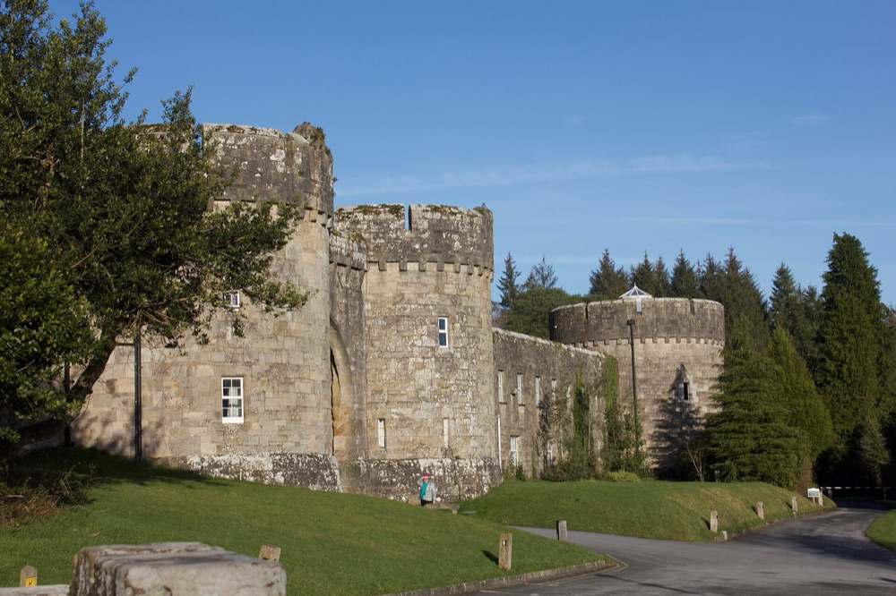
글렌스탈 수도원 게스트하우스 (Glenstal Abbey · 리머릭 · O.S.B.)베네딕도회 수도원. 게스트하우스에 묵으며 수도자들의 성무일도에 참여할 수 있습니다. - 2
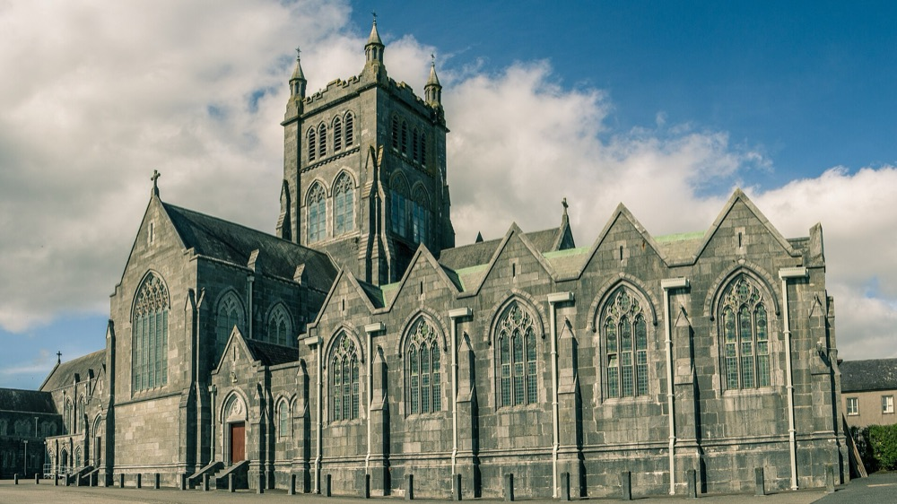
마운트 멜러레이 수도원 (Mount Melleray Abbey · 워터포드 · 트라피스트 O.C.S.O.)1832년 세운 트라피스트 수도원. 산자락의 게스트하우스에서 침묵 피정을 합니다. - 3글렌달록 (Glendalough · 성 케빈 St Kevin의 수도원터)6세기 성 케빈이 세운 수도원터와 두 호수. 근처 숙소에 묵으며 걷는 피정에 맞습니다.
- 4
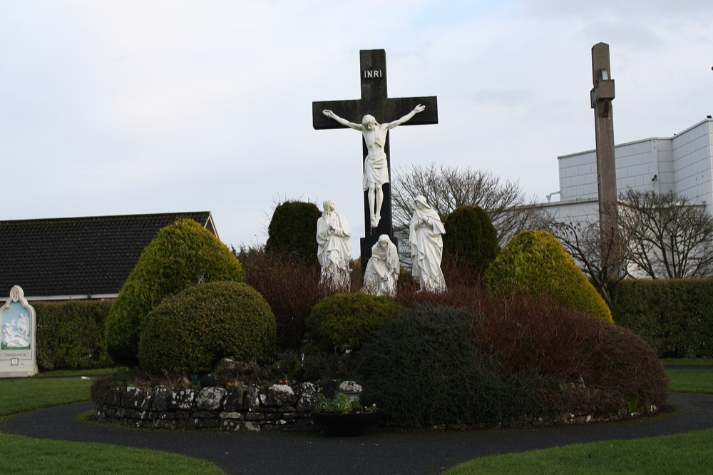
녹 성모성지 체류형 피정 (Knock Shrine)성지 안 숙소에 묵으며 매일 미사와 고해, 성체조배로 하루를 채웁니다.
수도원마다 수용 인원과 예약 조건이 달라서 장소부터 같이 정해야 합니다. 희망 시기를 주시면 받아 주는 곳을 찾아 알려 드립니다. 이동·통역·미사 시간 안내를 함께 맡습니다.
정해진 패키지 대신 기간·인원·체력·희망 성지에 맞춰 일정표를 처음부터 함께 만듭니다. 대전교구 (Diocese of Daejeon) 아일랜드 성지순례단과는 9일 일정으로 동행했습니다. 기간별 구성 예시는 3일 더블린·동부, 5일 동부와 서부, 9일 전국입니다.
자주 넣는 성지- 1녹 성모성지 (Knock Shrine · 메이요)1879년 성모 발현지. 서부 일정의 중심.
- 2발린터버 수도원 (Ballintubber Abbey · 메이요)800년간 미사가 이어진 수도원. 크로 패트릭 순례길 토하르 파드리그의 출발점.
- 3
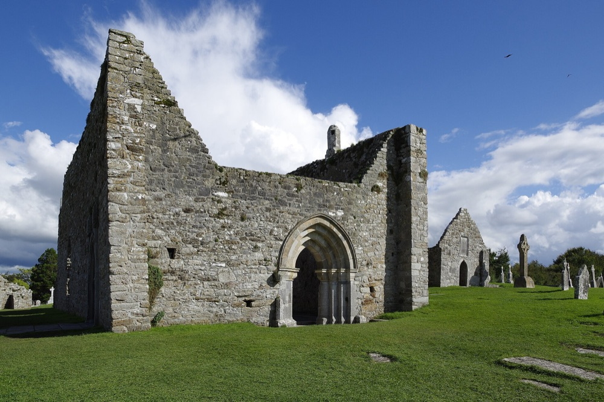
클론막노이즈 (Clonmacnoise · 오팔리)섀넌강변에 성 키아란이 6세기에 세운 수도원터. 하이 크로스와 원형탑이 남아 있습니다. - 4글렌달록 (Glendalough · 위클로)성 케빈의 수도원터. 더블린에서 1시간 거리라 3일 일정에도 들어갑니다.
- 5
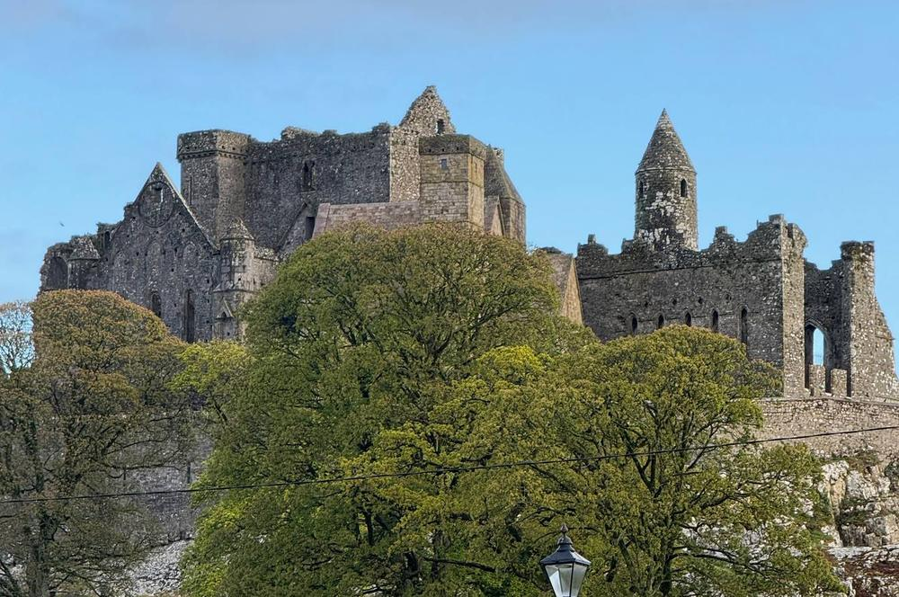
락 오브 카셸 (Rock of Cashel · 티퍼레리)성 패트릭이 먼스터 왕에게 세례를 준 바위 언덕. 중세 대성당과 원형탑, 입장료 별도. - 6
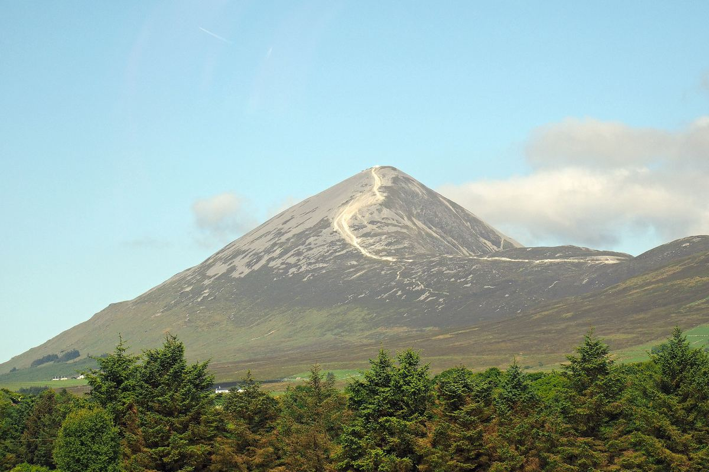
크로 패트릭 (Croagh Patrick · 메이요)성 패트릭이 40일을 기도한 산. 왕복 3~4시간 등산이라 참가자 구성을 보고 넣습니다.
하루에 정차지를 많이 넣지 않습니다. 더블린 도보 순례와 레지오 마리애 순례를 일정 안에 넣을 수 있고, 미사 시간·숙소·이동 시간을 조율합니다 (숙소 예약 대행 가능). 상담 후 일자별 일정표를 만들어 드립니다.
가격은 순례 조건에 맞춰 정합니다
성지순례에는 정가가 없습니다. 순례지와 이동 거리, 기간, 인원, 도보인지 차량인지, 통역·동행 범위에 따라 금액이 크게 달라지기 때문입니다. 먼저 카톡으로 조건을 알려 주시면 견적을 만들어 드립니다. 정한 것이 없어도 됩니다.
아일랜드 서부 성지순례 (Kylemore Abbey · Knock Shrine)는 당일 로드트립으로 운영 중이라 정가가 있습니다. 가격은 로드트립 페이지에서 확인할 수 있습니다. 나머지 5개는 1:1 견적으로 안내합니다.
포함 · 불포함
포함
- 차량·연료
- 주차·톨비
- 운전
- 한국어 가이딩·순례 안내
- 미사 시간 사전 확인
불포함 (개인 부담)
- 식비1인당 약 €15~25
- 성지·수도원 입장료장소별 상이, 무료인 성지도 많음
- 숙박비
- 기타 개인 비용
- 가이드 식비
- 가이드가 직접 부담합니다.
- 여행자 보험
- 포함되지 않습니다. 각자 가입 후 참여를 권합니다.
- 식단
- 알레르기·종교적 식단 제한·선호 음식은 예약 시 카톡으로 알려 주세요.
결제·취소 정책은 다른 서비스와 같습니다. 예약 시 50% 예약금, 완료 후 잔금 50% + 실비.
72시간 전까지는 무료 취소(예약금 전액 환불), 72~24시간 전은 예약금의 50% 환불, 24시간 이내 취소는 환불이 없습니다. 노쇼는 총 요금 전액입니다.
이용약관에 자세히 적어 두었습니다.
본당·교구·기관 단위 공식 문의는 sby05034@gmail.com으로 주세요.
어떻게 진행되나요
카톡 한 번으로 시작합니다.
-
카톡 상담
희망 순례지·날짜·인원·본당(단체) 여부를 알려 주세요. 정해진 게 없어도 됩니다.
-
순례 동선 제안
미사 시간과 개방 시간을 확인해 2~3가지 동선을 만들어 드립니다.
-
확정·예약
일정을 확정하고 예약금 50%를 보냅니다. 변경·취소 조건은 미리 안내합니다.
-
순례 동행
약속 장소에서 만나 함께 출발합니다. 미사·묵상 시간을 넉넉히 두고 진행합니다.
순례 준비, 이것만 챙기세요
- 미사 참례
- 원하시면 성지 미사 시간에 맞춰 도착 시각을 조정합니다. 주일 미사·평일 미사 모두 확인할 수 있습니다.
- 복장
- 성당·수도원에 들어가니 단정한 복장이 좋습니다. 아일랜드 날씨는 하루에도 바뀌니 방수 겉옷과 편한 신발은 계절과 무관하게 챙기세요.
- 입장료
- 녹 성모성지, 발린터버 수도원처럼 무료(기부 권장)인 곳이 많습니다. 유료인 곳은 예약 단계에서 금액을 알려 드립니다.
- 단체 순례
- 본당·교구·레지오 꾸리아 단위로 받습니다. 차량이 7인승 한 대라 인원이 많으면 차량 구성을 따로 상의합니다.
- 한국어 묵상·성가
- 원하시면 이동 중 묵상 안내와 성가 진행을 함께 준비합니다.
- 어르신 동반
- 도보 거리와 계단이 있는 성지는 미리 알려 드리고, 무리 없는 동선으로 바꿉니다.
일자별 상세 일정은 카톡 상담으로 개별 안내드립니다.
성지순례 자주 묻는 질문
결제·취소·환불 조건은 이용약관에서 확인하실 수 있습니다.
성지순례 상담
어느 성지를 갈지 정하지 않으셨어도 됩니다.
단체 성격과 날짜를 알려 주시면 순례 코스를 먼저 제안합니다.